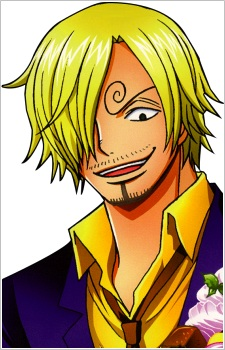

Informasi Anime
Genre:Action, Adventure, Fantasy
Ditayangkan: 20 Oktober 1999 Sampai ?
Tahun Rilis: 1999
Jumlah Episode: Tidak diketahui
Durasi: 24 menit
Studio: Toei Animation
Platform Streaming:
One Piece
Cerita mengikuti Monkey D. Luffy, seorang pemuda yang memiliki kemampuan tubuh seperti karet setelah memakan Buah Iblis Gomu Gomu no Mi.
Luffy bercita-cita menjadi Raja Bajak Laut dengan menemukan harta legendaris bernama One Piece yang tersembunyi di Grand Line.
Dalam perjalanannya, Luffy membentuk kru yang beragam, dikenal sebagai Topi Jerami, yang masing-masing memiliki mimpi dan kemampuan unik.
Bersama-sama, mereka menghadapi berbagai musuh tangguh, menyingkap misteri dunia, dan berjuang untuk melindungi teman-teman mereka.
One Piece tidak hanya berisi aksi dan petualangan yang epik, tetapi juga menyoroti nilai persahabatan, keberanian, kepercayaan, dan
semangat pantang menyerah. Cerita ini menggambarkan perjuangan dan perjalanan panjang untuk mencapai impian di dunia yang luas dan penuh
tantangan.
Character & Voice Actor

Monkey D. Luffy
Tanaka Mayumi


Roronoa Zoro
Nakai Kazuya


Sanji
Hirata Hiroaki


Nico Robin
Yamaguchi Yuriko